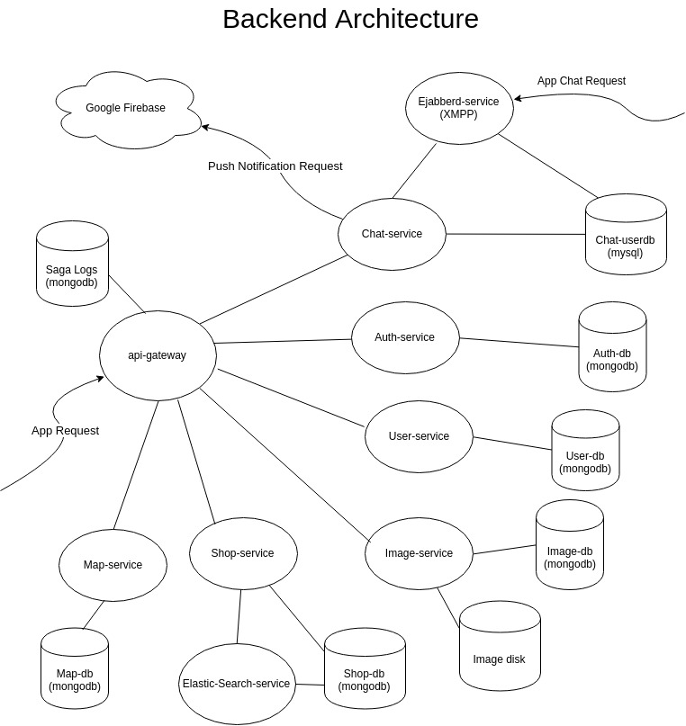

{kind=link}
{kind=link}
{kind=link}
{kind=link}
{kind=link}
{kind=link}

My friend and I built an Android application where users can login, open up shops and place a marker on a map to promote their shops. Users can interact with other users using in-app instant messaging, search up items using a search bar that supports elastic search or browse nearby products using "infinite" product scrolling. This project was built from scratch referencing various sources and documentations on the internet. More details available at Google Play.
During my junior year, I felt that the classes I've taken were mostly theory based and wanted to learn something more practical. These classes covered a wide range of topics such as software engineering, networking, databases, DS and algorithms. However, I wanted to work with something outside of these courses and more hand on see what I was capable of doing. I wasn’t alone in this and by teaming up with my friend, we decided to build something that could potentially be built into a product leading into a startup. The idea was to help local small businesses as well as individuals promote their shops and interact with the customers all within a single application.
However, the start was difficult since there were no guidance or direction like the assignments from the CS courses. At first we didn't know anything such as how to build a server, what kind of frameworks to use, how to set up the development environment etc. We started with small sub projects and built our way up to bigger projects solving the challenges one at a time. There were often frustrating times where it took hours to days to solve problems but the joy that came of solving a problem pushed me to go forward to the next problem. Sooner or later I found myself fully committed to this project rather than academics. I worked my way through this project part-time during the school year and further devoted full-time during the summer and winter break for over a year.
Overall, I had fun working on this project and learned far more than what I would have learned in class. The most fulfilling moments were when putting working features together and demoing and explaining each other's concepts and implementation of the features. From this project I discovered my particular passion in back-end development and I'm planning to pursue a career in back-end software development.
We planned to monetize this project and build a start-up by sending out local ADs or offering special shop markers or shop store front displays for a fee. We tried to understand other somewhat similar crowdsourcing products such as Kijiji, Craigslist, Yelp, Letgo, Varagesale and implement something different and unique. This project is no longer under development.
The back end was bulit using Node.js Docker containers following the microservice design pattern which was inspired by a Youtube video "Mastering Chaos - A Netflix Guide to Microservices".

The chat-service has access to the MySQL database connected to ejabberd-service(XMPP) which allows custom http requests that the ejabberd framework does not support. For example, unread messages and dialogs lists cannot be synced among multiple devices only using XMPP, however, by adding such sevice makes these features possible. Also, this service handles push notification message deilvery to users when they're disconnected to the XMPP server.
A XMPP framework used to add an instant messaging functionality. Enabled features are:
Stores and handles requests for user data such as profile image uri, background image uri, shop ownership, name.
Stores and handles requests for image files and its permissions. Image names are stored as random MD5 hash strings.
Stores and handles requests for shop data such as its products, cover images.
This service handles app search requests made from the app search bar search requests are proxied from the shop-service.
Stores and handles requests for shop locations on the map. Locations are stored and queried using mongoDB’s geospatial queries.
{kind=link}